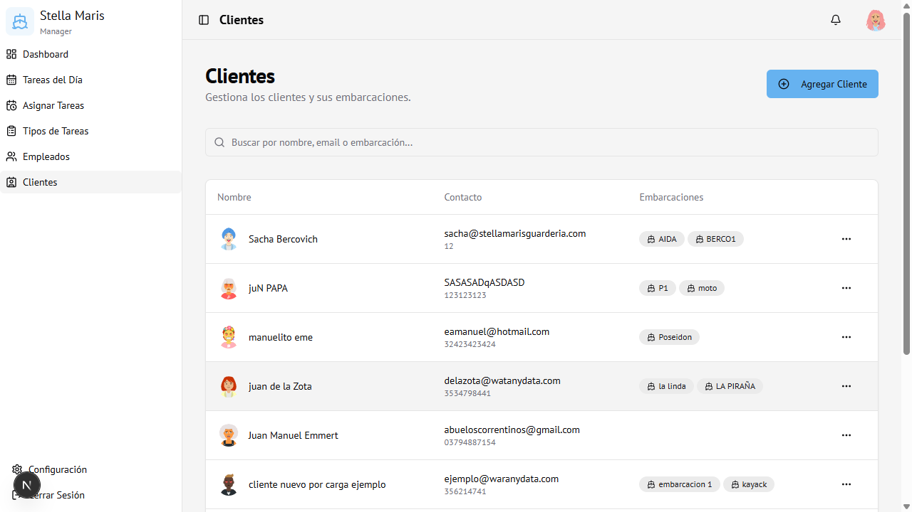
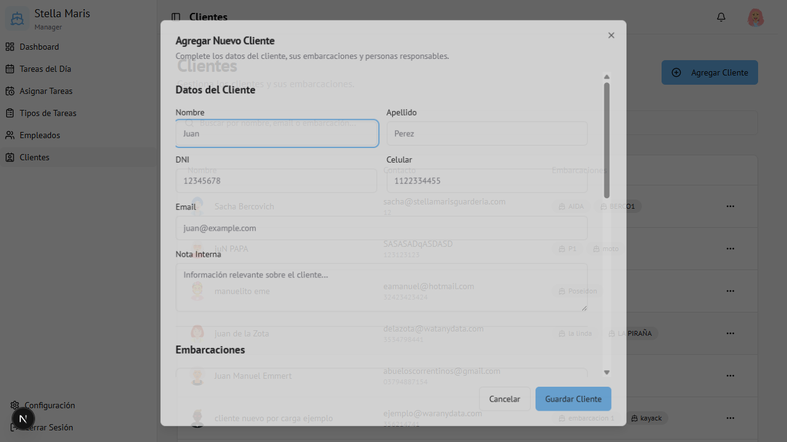

Módulo 06
Clientes
Gestión de los clientes de la guardería y sus embarcaciones.
Vista general

La tabla muestra: Avatar del cliente, Nombre completo, Contacto (email y teléfono), y Embarcaciones (chips con los nombres de las lanchas registradas).
Agregar un cliente
- Hacer clic en Agregar Cliente (arriba a la derecha)
- Se abre el formulario

Sección: Datos del Cliente
| Campo | Obligatorio | Descripción |
|---|---|---|
| Nombre | Sí | Nombre del cliente |
| Apellido | Sí | Apellido del cliente |
| DNI | No | Documento de identidad |
| Celular | No | Número de contacto |
| No | Correo electrónico | |
| Nota Interna | No | Observaciones privadas (solo visibles para el admin) |
Sección: Embarcaciones
Se pueden agregar una o varias embarcaciones al cliente:
| Campo | Descripción |
|---|---|
| Nombre | Nombre de la lancha (ej: "La Linda") |
| Tipo de casco | Material o modelo del casco |
| Motor | Descripción del motor |
| Número de registro | Matrícula oficial |
| Fotos | Imágenes de la embarcación (opcional) |
Para agregar una embarcación: clic en + Agregar Embarcación
Para eliminar: clic en el ícono de papelera
Sección: Personas Responsables
Contactos adicionales autorizados por el cliente:
| Campo | Descripción |
|---|---|
| Nombre y Apellido | Persona responsable |
| DNI | Documento de identidad |
| Celular | Teléfono de contacto |
Para agregar: clic en + Agregar Responsable
- Hacer clic en Guardar Cliente
Editar un cliente
- Hacer clic en los tres puntos (···) de la fila
- Seleccionar Editar
- Modificar los datos (incluyendo embarcaciones y responsables)
- Hacer clic en Guardar Cliente
Eliminar un cliente
- Hacer clic en los tres puntos (···)
- Seleccionar Eliminar
- Confirmar en el diálogo de alerta
Buscar clientes
Usar el buscador para filtrar por nombre, email o nombre de embarcación.
Acceso
Visible para Administrador.
Los Encargados pueden ver la lista pero no agregar ni eliminar clientes.
Ruta:
Los Encargados pueden ver la lista pero no agregar ni eliminar clientes.
Ruta:
/clients